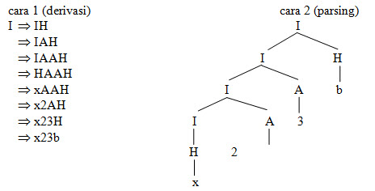
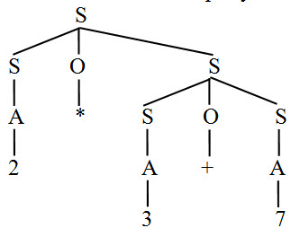
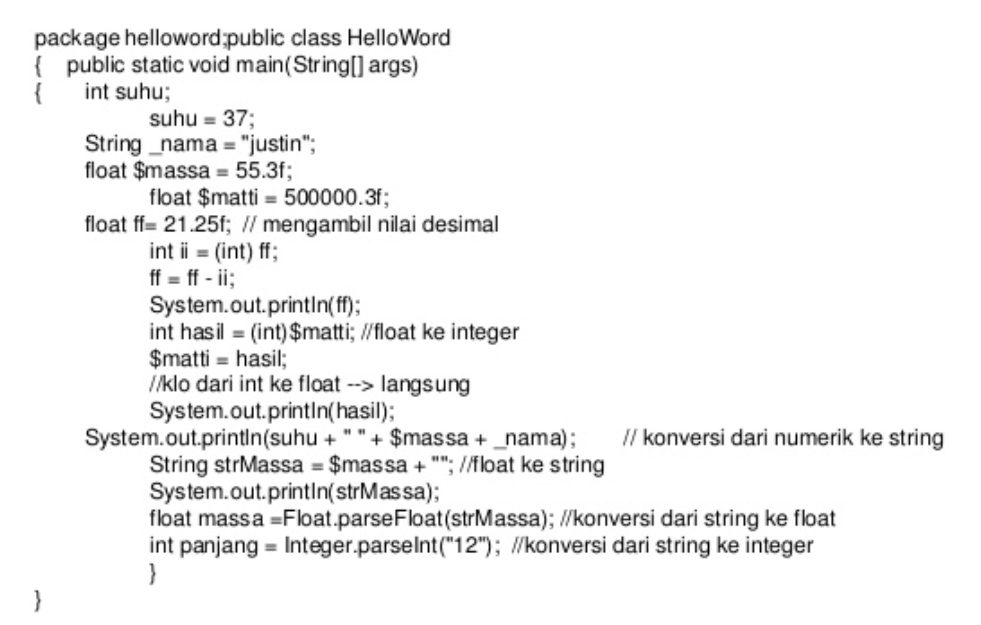
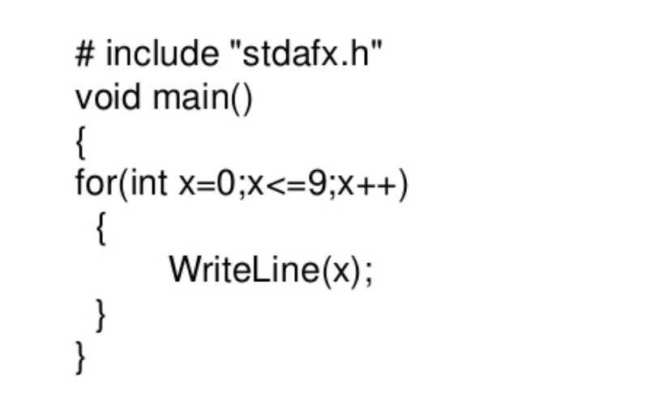
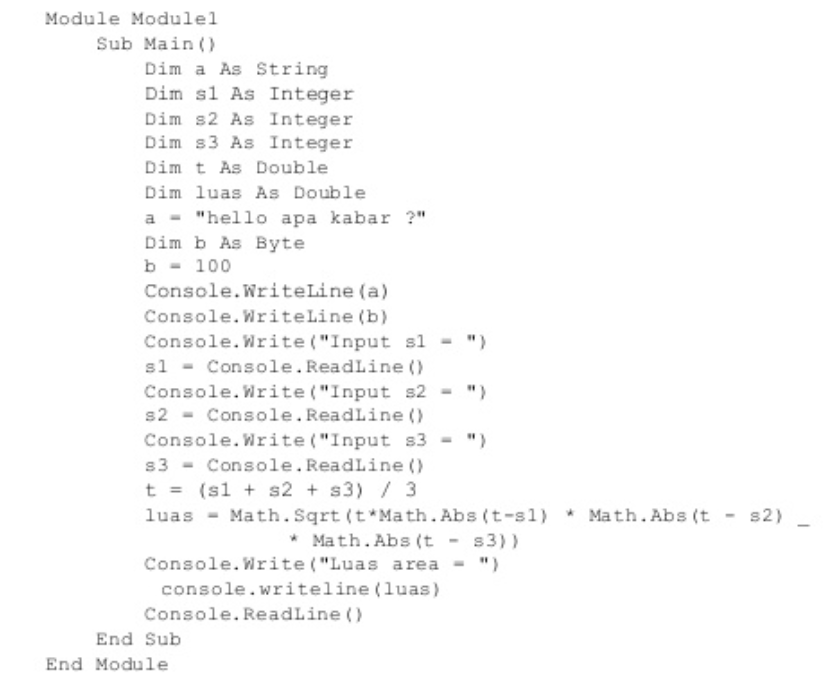

Context Free Grammar (CFG)/ Bahasa Bebas Konteks adalah sebuah tata bahasa dimana tidak terdapat pembatasan pada hasil produksinya
Context Free Grammar ( CFG ) adalah tata bahasa yang mempunyai tujuan sama seperti halnya tata bahasa regular yaitu merupakan suatu cara untuk menunjukkan bagaimana menghasilkan suatu untai-untai dalam sebuah bahasa.
Context Free Grammar ( CFG ) menjadi dasar dalam pembentukan suatu parser/proses analisis sintaksis. Bagian sintaks dalam suatu kompilator kebanyakan di definisikan dalam tata bahasa bebas konteks. Pohon penurunan ( derivation tree/parse tree) berguna untuk menggambarkan simbol-simbol variabel menjadi simbol-simbol terminal setiap simbol variabel akan di turunkan menjadi terminal sampai tidak ada yang belum tergantikan.
Contoh :
Diketahui grammar G = {I → H | I H | IA, H → a| b | c | … |z, A → 0 | 1 | 2| …|9}
dengan I adalah simbol awal.Berikut ini kedua cara analisa sintaks untuk string x23b.
Ambiguitas terjadi bila terdapat lebih dari satu pohon penurunan yang berbeda untuk memperoleh suatu string.
Contoh :
Diketahui grammar G = {S → SOS|A , O → *|+, A → 0|1|2|…|9}
String : 2*3+7 mempunyai dua pohon sintaks berikut :
Sebuah string yang mempunyai lebih dari satu pohon sintaks disebut string ambigu (ambiguous). Grammar yang menghasilkan paling sedikit sebuah string ambigu disebut grammar ambigu.
Mendeskripsikan aturan tata bahasa suatu bahasa pemrograman (seperti : Java, C, Pascal, Basic)
Contoh Java
Contoh C++
Console VB.Net
